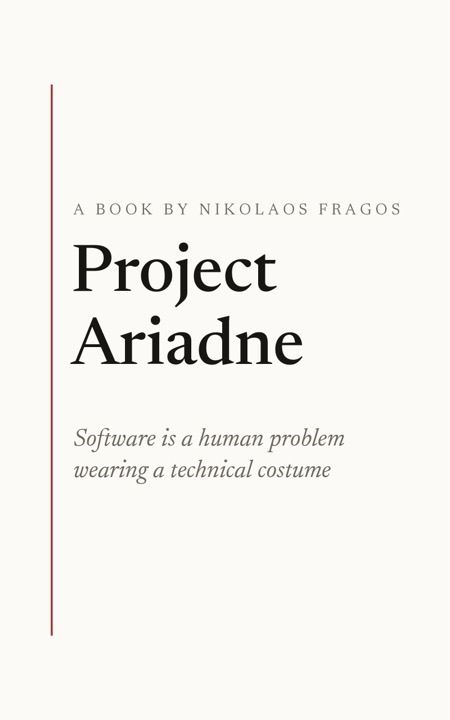

The book
Project Ariadne
Software Is a Human Problem Wearing a Technical Costume
One day, at the peak of the biggest project of my career, I did nothing at all. Everything I could touch was blocked on another team's API, an unmade decision, a database change only one person was allowed to perform. The project was later scrapped in its entirety. None of its wounds were technical.
Thirty-one chapters on the craft of code, the machinery of shipping, the people who do the work, the process theater that consumes them, and the decisions that actually determine outcomes. Every chapter opens with something that really happened, and argues against itself before it's done.
More at projectariadne.dev: the lexicon, the counterarguments, and field notes on interviewing, the whiteboard and web performance.
About
I'm a software engineer in Athens. Since 2016 I've built platforms for Greece's public sector at GRNET; before and alongside that, payments infrastructure, a sportsbook's backend services, debt-collection systems and a school platform used across the country. Mostly C# and .NET, with the queues, databases and dashboards that come with it.
I also hold a Professional Scrum Master certificate that nobody has ever asked me about, which is part of why I wrote the book.
Work
GRNET · Greek Research and Technology Network
Design and build web applications for Greece's public sector on the Microsoft stack, working in Scrum as both developer and Scrum Master.
- ATLAS Ministry of Education
- OSY Ministry of Education
- Student Housing Benefit Ministry of Education
- Eury-Where Ministry of Education
- Transport Voucher Ministry of Shipping
- SFBB Ministry of Technology
Novibet
Built and maintained the payments infrastructure, with distributed transactions as sagas on MassTransit. Worldpay as the main provider, hosted and direct, plus PayPal, Skrill and Paysafe.
.NET · C# · SQL Server · RabbitMQ · MassTransit
Stoiximan / Betano
Designed, built and maintained applications and microservices for the company's infrastructure, and in the last months worked in Python alongside ML engineers to turn models into usable programs.
C# · RabbitMQ · Redis · PostgreSQL · Graylog · Grafana · Prometheus · Python
EPAFOS
Maintained Teleperformance's core debt-collection application, and worked on 4Schools, the platform used by most private and public schools in Greece.
- 4Schools C# .NET
- University Evaluation JSP · DUTH
- S800 Debt Collection VB6 · Teleperformance
- Advertising Tax Management VB6 · EDOEAP
Projects
Everything else is on GitHub.
Education & credentials
- 2012 – 2015
- University of Piraeus, MSc Network-Oriented Information SystemsThesis: Profile-Based Selection of Expert Groups
- 2005 – 2010
- Technical University of Crete, Electronic & Computer EngineeringThesis: an open-space 3D game with autonomous opponents · video
- Publication
- Profile-Based Selection of Expert GroupsTPDL 2016
- Certification
- Professional Scrum Master IScrum.org